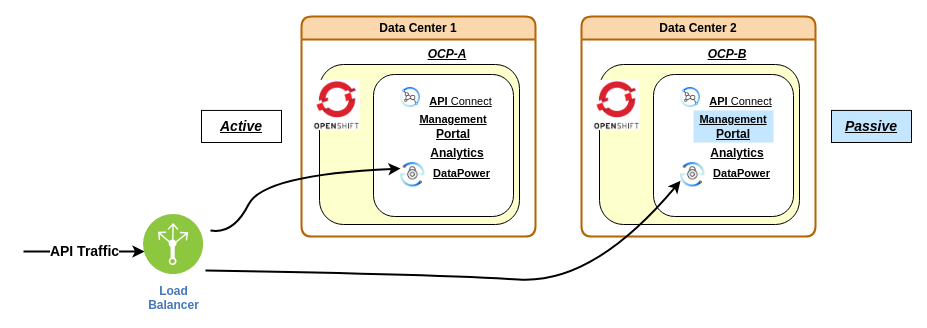
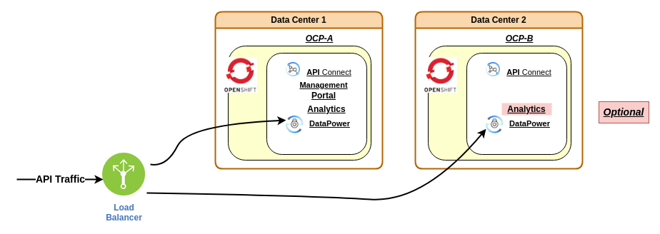

High Availability with Two Data Centers¶
IBM API Connect: Architecture¶
Ravi Ramnarayan
© IBM v1.81 2023-10-19
Goals¶
- Compare High Availability (HA) architectures for IBM API Connect v10 (APIC) on OpenShift
- Outline steps to deploy APIC with DataPower HA in DC2
Prologue¶
The data centers could be on premises or vendor sites. Ideally, the data centers should be in different locations with separate lines for power and communication.
Tabled for a later discussion
Modern cloud vendors can provide a variation which might be less expensive. APIC subsystems comprise three pods in Production deployments. Within a single OCP cluster, each subsystem pod could run in different regions (vendor nomenclature vary), providing a quorum of two active pods even if a region failed.
APIC Deployment Architecture¶
We compare two APIC deployment architectures using the metrics Recovery Time Objective (RTO) and Recovery Point Objective (RPO). Please see Planning your deployment topology.
Recovery Point Objective (RPO)
The RPO measures how far back in time the recovery point is, and therefore how much new data is lost. An RPO of zero would assert that no data is lost, but such a solution is often a compromise against the cost and performance of the system.
1. Two Data Center Deployment (2DCDR)¶

Pro¶
- High Availability (HA) for API traffic
With adequate capacity, the DataPower cluster in a single DC could hand the full load if the other DC fails. - RPO for API Products
Near zero RPO for published API Products. - RPO for Consumer Subscriptions
Near zero RPO for Consumer Subscriptions. If the business requires near zero RPO, the Two data center deployment strategy on Kubernetes and OpenShift is the appropriate choice. - RTO Failover
If the active APIC cluster fails, it is possible to activate APIC on the other cluster in a short period. APIC functions cannot be performed until the completion of RTO Failover.- Consumer Organizations cannot initiate new Subscriptions
- Provider Organizations cannot publish or update API Products
Contra¶
- Maintenance
Typically, APIC upgrades occur two to four times a year. Each upgrade bears the burden of increased time and effort.- Maintaining a two data center deployment is complex
- Upgrading a two data center deployment specifies operations on both OCP clusters within the same change window
- RTO to restore 2DCDR requires Disaster Recovery (DR)
The goal of DR is to restore 2DCDR, which is different from RTO Failover. DR processes need to be aware of the active APIC site, adding complexity. - Costs
Software license and operational costs might be higher than the other architectures. Please verify specifics for your installations.
2. APIC with DataPower HA in DC2¶

Pro¶
- High Availability (HA) for API traffic
Same HA level as the 2DCDR architecture. - RPO for API Products
It is possible to achieve near zero RPO tolerance with a backup soon after publishing products. - Maintenance
- Upgrade of APIC & DataPower in DC1 using the top level APIConnectCluster Custom Resource (CR) requires less effort than upgrading APIC subsystems of the 2DCDR deployment
- DataPower subsystem in DC2 can be upgraded in a separate change window
Starting with APIC v10.0.5.x, all fixpacks (fourth position) of APIC will be compatible with DataPower v10.5.0.x. The flexibility allows a relaxed schedule to upgrade DC2.
- Disaster Recovery (DR)
The process is less complex than DR for 2DCDR and should to be quicker to complete. - Costs
Software license and operational costs might be lower than for 2DCDR. Please verify specifics for your installations.
Contra¶
- RPO for Consumer Subscriptions depends on the frequency of backups
It is possible to capture backups frequently, but RPO will not be comparable to 2DCDR's near zero tolerance for Consumer Subscriptions. - RTO depends on DR
The recovery time can be reduced with automation and DR drills. However, it is likely to take longer than the RTO Failover enabled by 2DCDR. APIC functions cannot be performed until DR restores normal service.- Consumer Organizations cannot initiate new Subscriptions
- Provider Organizations cannot publish or update API Products
Deploy APIC with DataPower HA in DC2¶
Note: The steps below assume a connected OCP. Adjust as needed for air-gapped OCP.
- Connected OCP
Use Installing operators - Air-gapped OCP
Use the appropriate recipe in Air-gapped installation.
Install APIC in DC1¶
Start with Installing API Connect and follow the trail to Installing with the top-level CR on OpenShift.
Install DataPower in DC2¶
Installing with subsystem CRs in different namespaces or environments provides the overview. We will install the DataPower subsystem in DC2.
- OCP in DC2 needs preparations such as
pull-secretand the IBM Operator Catalog source. - Install the IBM API Connect operator in
apigw2namespace in DC2
This is the same operator used to install APIC in DC1. - The versions of the operators in DC1 & DC2 must be the same
- Make sure the DC2 cluster has the same certificates as APIC in DC1
See Common Issuers & Gateway Secrets.
Note: DataPower in DC2 could be on OCP or Kubernetes (K8s). This document details steps for DataPower on OCP. VMware and Linux are feasible platforms, but DataPower configuration and maintenance operations are more intense than OCP/K8s.
Namespace & Operators¶
- Create a namespace, for example,
apigw2Note: Follow your naming conventions.
apigw2is just an example. - Install the IBM API Connect operator in
apigw2- Subscribe to the same channel as the parent APIC in DC1
Common Issuers & Gateway Secrets¶
Follow steps in Installing the Gateway subsystem section Before you begin.
-
Clone
ingress-cafrom the primary OCP in DC1
Installing the Gateway subsystem section Before you begin Step 1. Detailed instructions are in Extracting the Management ingress-ca certificates.- Apply the extracted
ingress-cato the DC2 Projectapigw2
oc apply -f <your ingress-ca extract.yaml> -n apigw2 - Get the complete name of
ingress-ca
Note: The secret name in your installation will be different.
- Apply the extracted
-
Define Common issuers and Gateway secrets
Obtain YAML from Installing the Gateway subsystem section Before you begin Step 2.-
Edit the YAML and set the Issuer
spec.ca.secretNameto value above
See example 230-common-issuer-and-gateway-certs.yaml which setsspec.ca.secretNametoapis-minimum-ingress-ca. -
Apply your YAML to Project
apigw2in DC2
-
Confirm issuers were created and ready for use
-
Confirm the creation of gateway secrets
oc get secrets -n apigw2 | grep gateway gateway-peering kubernetes.io/tls 3 24s gateway-service kubernetes.io/tls 3 24sNote: "3" in the third column indicates three components in the TLS (good).
-
Deploy DataPower Gateway in DC2¶
-
Create Gateway admin secret
You could use the same password as in the DC1 OCP or assign a different value. Create the secret in DC2 namespaceapigw2:
-
Define the APIGW Gateway
Copy the YAML from Installing the Gateway subsystem section Procedure Step 2. Use values appropriate to your installation. Recommend following naming conventions in DC1.- $ fields
metadata.name(optional, default value is okay)metadata.labels.app.kubernetes.io/name(optional, default value is okay)spec.adminUser.secretNameshould be<gw_admin_secret_name>, which you created in the previous step
See Example Values in 250-apigateway_cr.yaml.
Note: Example values are NOT shell script substitutions. You should edit the file manually.
It takes about five minutes to create the GatewayCluster.
-
Is the gateway running?
oc get GatewayCluster -n apigw2 -
Is the Gateway Management endpoint active?
curl -k https://<spec.gatewayManagerEndpoint.hosts.name>/health
should return:
{"status":"ok"} -
Register DC2 Gateway Service in the parent DC1 APIC
Obtain URL for endpoints from OCP Routes in projectapigw2.
Deploy Analytics in DC2¶
Note: Optional. Analytics is not needed in DC2, unless the API traffic is extremely high. You could install Analytics at a later date, if needed.
Deploy the Analytics subsystem in DC2 within the same namespace as the DataPower Gateway. The steps in Installing the Analytics subsystem are similar to Installing the Gateway subsystem.
-
Common Issuers
Nothing to do. Been there, done that in Common Issuers & Gateway Secrets. Skip over section Before you begin in Installing the Analytics subsystem. -
Obtain YAML from section Procedure Step 1 of Installing the Analytics subsystem.
-
Ensure
clientSubjectDNin DC2 Analytics matches the Subject common name of DC1 APIC CMC Analytics ingestion keystore.- In APIC 10.0.5.1, the Analytics ingestion keystore Subject common name is
a7s-ing-client - Modify
spec.ingestion.clientSubjectDNto match
The sample file 280-analytics_cr.yaml contains the correction.
- In APIC 10.0.5.1, the Analytics ingestion keystore Subject common name is
-
Create the Analytics subsystem in DC2
oc apply -f <your-analytics_cr.yaml> -n apigw2 -
Is the Analytics subsystem running?
oc get AnalyticsCluster -n apigw2 -
Register DC2 Analytics in the parent DC1 APIC
- Associate DC2 Analtyics with the DC2 DataPower Service
Troubleshoot¶
If you encounter a 403 Forbidden error while registering the Analytics Service, the cause is likely to be a mismatch of clientSubjectDN.
-
Find the pod named
mtls-gw
-
Do the logs show mismatched
clientSubjectDN?
10.254.20.1 - - [05/Dec/2022:23:08:36 +0000] "GET /_healthz HTTP/1.1" 200 2 "-" "kube-probe/1.23" 2022/12/05 23:08:36 [warn] 12#12: *2106 [lua] access_by_lua(nginx.conf:56):7: rejected request because certificate subject 'CN=a7s-ing-client' did not match expected 'CN=a7s-ing-client,O=cert-manager', client: 10.254.12.1, server: ai.apps.fainted.myco.com, request: "POST /analytics-service-registration-create?admin=true&management=true HTTP/1.1", host: "ai.apps.fainted.myco.com" 10.254.12.1 - - [05/Dec/2022:23:08:36 +0000] "POST /analytics-service-registration-create?admin=true&management=true HTTP/1.1" 403 159 "-" "axios/0.26.1" 10.254.20.1 - - [05/Dec/2022:23:08:46 +0000] "GET /_healthz HTTP/1.1" 200 2 "-" "kube-probe/1.23" -
Fix the problem
Modify theclientSubjectDNin the DC2 AnalyticsCluster YAML.